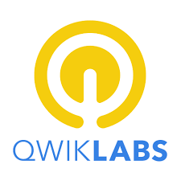
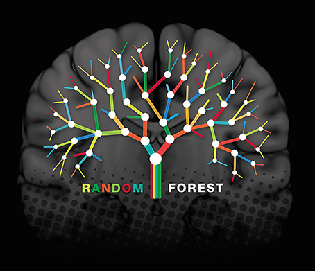

I am Veda Upasan,
Data Analyst | AI Enthusiast
About
I’m a Data Analyst/Engineer and AI Enthusiast with experience in data analytics, automation, and intelligent systems. My work focuses on building scalable data pipelines, implementing machine learning models, and leveraging AI for insight generation and process optimization. I’ve applied these skills across domains including IoT, real estate, and academic research, combining my expertise in Python, SQL, R, TensorFlow, and cloud data ecosystems to drive innovation and efficiency. I’m passionate about integrating AI-driven decision-making with robust data architecture to create systems that are not only smart but sustainable.
Download CVCertifications
-
 GoogleIntroduction to Generative AI
GoogleIntroduction to Generative AI -
 CourseraIoT Wireless and Cloud Computing Emerging Technologies
CourseraIoT Wireless and Cloud Computing Emerging Technologies -
CourseraProgramming for Everybody - getting started with Python
-
 SWAYAM MHRDThe Joy of Computing using Python
SWAYAM MHRDThe Joy of Computing using Python -
SWAYM MHRDDatabase Management System
-
QwiklabsGCP Essentials
-
QwiklabsGoogle Cloud Platform Application Development - Crash Course
Expertise
- Data Engineering
- SQL
- Python
- ETL Pipelines
- Machine Learning
- Big Data
- Apache Airflow
- MLflow
- Docker
- Git
- Power BI
- Teamwork
- Leadership
- Problem Solving
- Communication
Experience
Studentslanding
Sales Analyst
July 2025 - Present
Transforming raw sales and market data into actionable insights, I design dashboards and reports that provide real-time visibility into trends and performance. Using SQL, Python, and analytics techniques, I uncover market patterns, optimize pricing strategies, and support business growth, while presenting complex datasets through clear visualizations that empower teams to make faster, data-driven decisions.
Humanitarians AI
Data Engineer
September 2024 - July 2025
Developed a Distributed Reasoning Agent using LangChain, Groq API, and Gemini API with dynamic task decomposition and parallel sub-agents, improving workflow efficiency by ~40%. Built web scraping pipelines for 100+ university directories, delivering validated datasets and scalable AI workflows that accelerate research, streamline expert discovery, and enable faster large-scale data analysis.
Wipro
Data Engineer
July 2021 - August 2022
Managed and optimized large-scale financial datasets using Teradata, designing efficient ETL pipelines and BTEQ scripts for seamless data extraction and transformation. Automated workflows and incident tracking via ServiceNow to improve SLA adherence and reporting transparency, while consolidating data from multiple sources to power real-time dashboards and deliver actionable business insights.
TheSmartBridge
Internet of Things Intern
January 2020 - January 2020
Developed an IoT-based Smart Irrigation System using Python and IBM Cloud, integrating Raspberry Pi, THD11 sensors, ultrasonic sensors, and soil moisture sensors. Leveraged MIT App Inventor to create a mobile interface for real-time monitoring and control, automating irrigation schedules and optimizing water usage for smart agriculture applications.
CEDAR Information Technology Pvt. Ltd
Machince learning Intern
December 2019 - January 2020
Developed a real-time face recognition system using Python, leveraging OpenCV and the Python Imaging Library (PIL) to detect and identify faces efficiently with high accuracy.
Education
Northeastern University
Master's in Data Analytics Engineering
September 2022 - May 2024
Related coursework: Computation and Visualization for Analytics, Data Management and Database Design, Data Management for Analytics, Data Mining in Engineering, Foundations of Data Analytics, Machine Learning Operations, Neural Networks and Deep Learning, Statistical Learning for Engineering.
Andhra University
Bachelor of Technology in Computer Science
July 2017 - July 2021
Related coursework: C/C++ programming, data structures, digital logic design, and computer organization, algorithms, machine learning, software development, and cybersecurity
Recent Works
Here are some of my favorite projects I have done lately. Feel free to check them out.
-
Humanitarians AIDistributed Reasoning Agent
-
 Northeastern UniversityMachine Learning Operations - Retail Price Prediction Pipeline
Northeastern UniversityMachine Learning Operations - Retail Price Prediction Pipeline -
Northeastern UniversitySmart Home Automation System Database
-
 Northeastern UniversityPredicting Telco Customer Churn using Artificial Neural Networks
Northeastern UniversityPredicting Telco Customer Churn using Artificial Neural Networks -
 Northeastern UniversityRoom Occupancy Prediction
Northeastern UniversityRoom Occupancy Prediction -
Northeastern UniversitySafety Escort Service Database Management System
-
 Northeastern UniversityArmory control in USA
Northeastern UniversityArmory control in USA -
Andhra UniversityNETWORK TRAFFIC CLASSIFICATION USING RANDOM FOREST MODEL
-
TheSmartBridgeIoT Based Smart Irrigation System
-
 CEDARReal-time Face Recognition
CEDARReal-time Face Recognition

Distributed Reasoning Agent
An AI-driven Distributed Reasoning Agent that decomposes complex problems into intelligent sub-tasks, assigns them to dynamically generated sub-agents, and synthesizes results into structured solutions. Powered by LangChain, Groq API, and Gemini API, it automates multi-agent reasoning workflows for scalable, high-performance decision-making—blending modular AI architecture, asynchronous task orchestration, and LLM-powered cognition into one seamless system. Project-Demo
- Python | LangChain | Groq API + Gemini API | Rich Console

Machine Learning Operations - Retail Price Prediction Pipeline
Built an end-to-end ML pipeline for retail price prediction using Apache Airflow and the Online Retail Dataset. Automated data ingestion, preprocessing, and transformation, trained multiple models (SGD, Decision Tree, KNN) in parallel, and tracked experiments with MLflow. Deployed the best-performing model with versioning, and integrated Slack notifications and Google Cloud Storage for real-time monitoring and seamless pipeline operations.
- Apache Airflow | MLflow | Google Cloud Storage (GCS) | Python | Pandas | Scikit-Learn

Smart Home Automation System Database
Developed a smart home management database integrating entities like USER, DEVICE, ROOM, and SENSOR to enable personalized automation and intelligent control. Designed robust relationships, business rules, and analytics for device usage, energy monitoring, and user customization, ensuring seamless interaction across the smart home ecosystem. Collaborated with a team to enhance functionality and user experience through efficient data management and automation strategies.
- SQL

Predicting Telco Customer Churn using Artificial Neural Networks
Developed an ANN model in Python (Keras) to predict telecom customer churn and reduce revenue loss. Conducted extensive EDA on 7K+ records, handled missing data, and optimized the model with hyperparameter tuning and regularization, achieving 79% accuracy and over 80% precision and recall for non-churners. Addressed class imbalance and proposed advanced architectures and continuous model monitoring to enhance future performance.
- Artificial Neural Networks | Keras | ReLu | Python
Room Occupancy Prediction
Developed multiclass classification models to predict room occupancy using sensor data from the UCI Machine Learning Repository. Applied Logistic Regression, SVM, and Neural Networks, with the neural model achieving the highest precision. This project demonstrates strong skills in data preprocessing, model evaluation, and real-world applications in energy optimization and security systems.
- Support Vector Machine (SVM) | Neural Networks | PCA | Logistic Regression

Safety Escort Service Database Management System
Developed a database management system to streamline scheduling and booking for Northeastern’s safety escort service. Enhanced the RedEye App with pre-booking and pick-up features tailored for off-campus students, improving safety, convenience, and overall student well-being.
- MySQL | NoSQL | MongoDB | Python
Armory control in USA
Analyzed crime and incarceration data to study the relationship between gun control measures and public safety. Focused on key violent crime indicators, performed data preprocessing and feature engineering, and built predictive models to assess policy impacts. Developed an interactive web application to help lawmakers visualize and understand the effects of firearm legalization through data-driven insights.
- Pandas | Matplotlib | Seaborn | Label Encoding | Scikit-learn

NETWORK TRAFFIC CLASSIFICATION USING RANDOM FOREST MODEL
Developed a network traffic classification model using Python, NumPy, Pandas, and Random Forest to analyze and categorize network data captured with Wireshark, enhancing network security and efficiency through data-driven insights.
- Wireshark | Python | NumPy | Pandas | Random Forest | Excel

IoT Based Smart Irrigation System
Developed a smart irrigation system using Python and Raspberry Pi to optimize watering for healthier, high-yield crops. Integrated THD11, Ultrasonic, and Moisture sensors to monitor soil conditions in real time, and built a cloud-connected mobile app via IBM Cloud and MIT App Inventor for secure, user-friendly control by farmers.
- MPython | Raspberry Pi

Real-time Face Recognition
Developed a real-time facial recognition system using Python and OpenCV, achieving fast and accurate identification performance for potential applications across security, retail, and automation domains.
- Python | OpenCV
Publications
 Credit Risk Assessment - A Machine Learning Approach
Springer | Jul 10, 2023
Credit Risk Assessment - A Machine Learning Approach
Springer | Jul 10, 2023
Book Chapter in "Intelligent Systems and Machine Learning (ICISML 2022)" Read more
A Study on Review of Application of Blockchain Technology in Banking
Industry
Springer | Feb 22, 2022
Book Chapter in "Machine Intelligence and Soft Computing" Read more
A Study on Techniques of Soft Computing for Handling Traditional
Failure in Banks
Springer | Jun 9, 2021
Book Chapter in "Smart Technologies in Data Science and Communication 2021" Read more
A Stitch in Time Saves Nine: A Big Data Analytics
Perspective
Springer Singapore | Jan 1, 2020
Book Chapter in "Smart Technologies in Data Science and Communication 2020" Read more
 NEW VINTAGE OF NETWORKS
Journal of Emerging Technologies and Innovative Research | Jun 4,
2019
NEW VINTAGE OF NETWORKS
Journal of Emerging Technologies and Innovative Research | Jun 4,
2019
Journal of Emerging Technologies and Innovative Research 2019 Read more
 ADVANCEMENT OF WIRELESS TECNOLOGY
IEEE DIGITAL XPLORER | Sep 7, 2018
ADVANCEMENT OF WIRELESS TECNOLOGY
IEEE DIGITAL XPLORER | Sep 7, 2018
International Conference on New Trends in Engineering & Technology (ICNTET 2018) IEEE Conference
Get In Touch
If you’re looking for someone who turns data challenges into intelligent solutions — let’s connect...